RIFT：面向草稿模型的 KV 缓存压缩与互补可压缩性训练
论文： RIFT: KV Cache Compression for Draft Models with Complementary Compressibility Training
作者： Dor Tsur、Maor Ashkenazi、Maximilian Golub、Peter Hicks、Yaniv Galron、Talor Abramovich、Yoav Miron、Tiyasa Mitra、Bita Darvish Rouhani、Ran Zilberstein
机构： NVIDIA（PDF 首页全体作者统一标注）
公开日期： 2026-10-22；阅读日期：2026-10-26
来源： arXiv:2610.31098
主类别： LLM；标签：推测解码、长输出、KV 压缩、知识蒸馏
代码状态： PDF 未给出已核验的独立实现仓库；本文不把引用方法的代码当作 RIFT 官方代码。
1. 背景和问题
推测解码用小型草稿模型连续提出若干候选 token，再由目标模型一次验证。它的吸引力来自验证阶段可以同时处理多个位置，而目标分布仍由正确的拒绝采样机制保持。可是，草稿模型便宜并不意味着草稿过程在所有条件下都便宜：当输入很长、输出也很长时，小模型每一步都要读取越来越大的历史键值缓存。参数量可能已经降到可接受范围，内存流量、缓存容量与请求并发却仍然约束系统吞吐。RIFT 研究的正是这一交叉处：在限制草稿工作缓存的同时，尽量保留它与目标模型的一致性。
如何压缩草稿模型的 KV 缓存，才能在长上下文中持续维持与目标模型的对齐？
这句话对应引言提出的研究问题。限制缓存以后，模型看见的上下文不完整；草稿概率分布可能偏离目标模型，导致一次提出的序列中较早位置就遭拒绝。目标验证仍可维持输出分布，却必须更频繁地运行，原本希望省下的计算随之缩水。因此本文把平均接受长度作为草稿质量指标：它包括接受的草稿 token，以及目标模型额外生成的一个 token。接受长度高意味着同一验证轮次通常能推进更多位置，但它没有包含评分、搬运、验证和调度等所有时间，不能直接替代端到端延迟。
传统基于选择的 KV 压缩会在预填充阶段计算重要性，只留下被认为有用的提示位置。以 SnapKV 为例，最后一段提示查询构成观察窗口，根据这些查询的注意力决定保留哪些键值；本文默认窗口为 64 token。这种决策对开始回答时的问题可能合理，但在数千 token 的生成过程中，问题状态已经发生变化。新的中间推理、工具交互和目标验证过的文本会逐渐变成下一步预测的直接依据，最初提示中的重要位置不一定继续占据同样权重。
作者称这一变化为“解码陈旧性”。它不是普通意义上的数据过时，而是一次性选择出来的缓存集合与当前生成状态不再匹配。固定总预算让矛盾更加明显：全部保留新生成 token 会突破预算；只给新 token 一个很小的滑动窗口又会截断生成中的局部依赖；每一步重新检查所有历史位置则可能把草稿加速的收益消耗掉。论文把这三种力量放在一起讨论，因而比仅评估长输入、短回答的缓存筛选更贴近长推理场景。
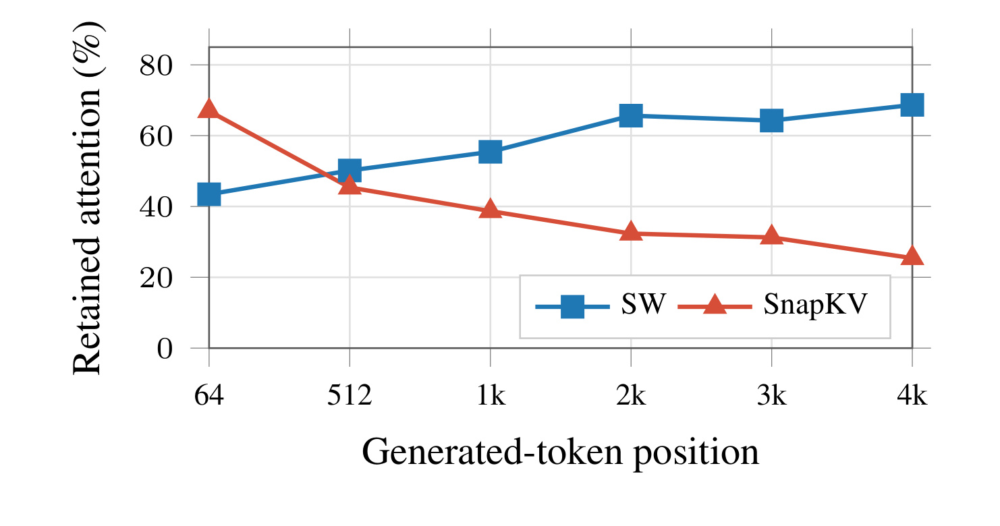
原文 Figure 2 给出了机制层面的旁证。横轴从最初的生成区间走到约 4K 输出位置，纵轴衡量完整缓存草稿的注意力质量中有多少落在压缩策略保留的位置。SnapKV 从约 67.0% 降至 25.4%，纯滑动窗口则从约 43.5% 升至 68.7%。曲线交叉说明，初始重要位置对后续预测的覆盖会变差，而最近上下文越来越相关。这个证据比“滑窗分数更好”更接近机制，但它仍然只是注意力覆盖与性能变化的一致性观察，不能把注意力权重直接解释成因果贡献，也不能推出所有架构都会发生同样交叉。这里的分母来自完整缓存运行所产生的总注意力，而不是被压缩策略重新归一化之后的权重。若只统计稀疏模型自己的注意力，每个保留集合都会接近百分之百，无法揭示遗漏。随着生成推进，滑窗自然包含更多新生成位置，其覆盖上升也与集合内容变化有关。复现实验需要固定缓存预算、查询位置和模型检查点，再以完整模型的注意力投影到各保留集合；否则集合大小或模型状态差异也会制造看似相同的趋势。
架构是理解结果的另一条线。现代混合模型可能把全注意力与线性注意力或状态空间层交织起来，完整注意力层只占少数，但长上下文和并发请求仍然能使 KV 占用超过权重占用。与此同时，已有循环状态已经吸收部分历史信息，完整注意力层对“最近生成文本”和“远处提示位置”的相对需求也可能不同。论文观察到 Qwen3.5、Nemotron 等混合架构中纯滑窗可以优于原始 SnapKV，而完整注意力 Llama3.1 保持另一种排序。这个区别提醒读者，不能拿单个模型上的压缩经验直接作为所有草稿模型的默认配置。
本文有意限定了研究对象。它讨论独立外部草稿模型和通过稀疏缓存实现的自推测，未把 MTP、Eagle、DFlash 等尾部增强草稿作为主要目标，因为初步实验认为这些设置从 KV 压缩得到的收益很小。外部草稿在异构、边缘辅助或硬件解耦系统里仍有意义，但这些系统条件不等于所有 GPU 部署的普遍选择。阅读结果时应同时保留模型结构与部署结构两个前提，否则容易把有针对性的优化泛化成统一最优方案。
对推荐与检索系统而言，最直接的关联发生在长会话助手、检索增强回答和需要生成长解释的重排服务。它们同样会累积大量已确认上下文，却往往沿用最初请求做缓存筛选。RIFT 提供的是“预算如何分配、何时刷新、训练怎样适应可见上下文”这三个研究变量，并未报告推荐指标的提升。它的迁移价值需要由真实业务中的长输出比例、草稿接受分布及内存层次结构来决定，不能从语言模型基准直接推出排序收益。
理解这个问题还需要区分三种“历史”。第一种是完整提示，它决定用户最初要解决的任务；第二种是目标模型已经确认的生成前缀，其中可能包含对任务的拆解和已经完成的计算；第三种是草稿自己尚未被验证的候选段。对齐所依赖的近期信息主要来自前两种，尤其是经过验证的前缀，而不是让草稿无条件相信所有自行生成的内容。这也是接受长度比单纯测量压缩模型困惑度更切题的原因：最终要优化的是它与指定目标模型的协作。
另一个容易混淆的层次是缓存内容压缩与推测解码正确性。草稿可以非常不准确，正确拒绝采样仍能保证目标分布，但系统可能接近每次只推进一个位置，失去加速意义。反过来，即便草稿接受长度很高，如果完整历史重评分和数据搬运太慢，也未必得到真实吞吐收益。本文的研究问题同时涉及概率匹配和系统代价，证据最充分的部分是前者；后者需要结合具体内存设备重新测量。这些区分也解释了为什么本文把刷新成本单独展示，而没有把接受长度直接改名为速度。
2. 方法
2.1 RIFT-stat：把预算分给近期上下文和重要位置
RIFT 的全称对应近期性、重要性融合与训练。最简单的静态版本不改变已有评分器，只改变缓存预算的分配。符号解释：$B$ 表示注意力实际访问的工作预算，$\rho$ 表示近期窗口在预算中的占比，$r$ 和 $k$ 分别是近期与重要位置的数量；向下取整保证最终分配是整数位置。这个表达把近期与远程容量绑定在同一个总预算内，不能同时把二者各自扩大后仍声称保持相同压缩率：
最近的 $r$ 个位置构成滑动窗口，其余 $k$ 个位置由预填充重要性评分选择。输入是提示期查询与键、以及预算和比例；输出是远程固定集合加上随解码推进的最近集合。这里“静态”仅指重要性集合在解码中不重新评分，并不表示整个工作缓存一动不动：最近窗口仍然持续更新。它修复的是近期信息预算不足，不是重新理解所有历史位置的重要性。
比例的两个端点分别接近原有预填充筛选与纯滑窗。中间比例希望既保留远处任务信息，又给目标模型刚刚验证过的生成前缀足够容量。论文重点采用一半近期、一半重要位置的推理配置，但没有宣称这个值适合所有预算和任务。为了贴近服务系统，作者也考虑按连续块保存 KV，并以块内键分数的均值打分。块粒度减少离散访问的工程负担，同时会把高分 token 的低分邻居一并保留，因此应当与页大小和内核访问方式共同选择。
2.2 RIFT-dyn：在解码过程中重新评分历史
静态版本仍然会遇到“远程集合过时”。动态版本每隔 $\Delta$ 个解码步重新计算可选历史的重要性，观察窗口随生成位置前移。它把整个可用历史中当前相关的位置重新带回工作集，并继续保留最近窗口。相对于静态版本，变化既来自候选位置范围，也来自评分查询更新：同一提示位置在不同推理阶段可以重新获得很高分数，新生成内容也能成为长期保留对象。
这里必须保留原文的内存前提：完整草稿 KV 仍需位于 HBM 或卸载存储中，供重评分读取。被压缩的是每一步草稿注意力访问的工作缓存，不一定是系统保存的全部历史 KV。若服务希望永久删除未选位置以获得真实总容量下降，就不能原样使用这种完整历史刷新。更频繁刷新通常提高接受长度，却也增加全历史扫描与索引重构；在异构系统中还可能增加搬运。论文的刷新间隔是质量和开销的控制旋钮，而非无代价优化。
2.3 RIFT-ada：由接受状态、熵和查询漂移决定刷新
周期刷新不会分辨某个阶段是否仍然使用相同上下文。自适应版本令 $\tau$ 为上次评分位置，缓存年龄为 $a_t=t-\tau$，以如下门控决定刷新：
$u_t=1$ 表示执行重评分；最小年龄避免相邻连续刷新，最大年龄防止长期不更新。策略每八个 token 检查一次，而非每一步都运行复杂控制。信号 $z_t$ 包括此前已测接受长度的指数加权均值、草稿分布熵，以及当前查询相对上次评分查询的漂移。归一化查询摘要的漂移写成
它在完整注意力层与 KV 头分组上求平均。近期接受变差、熵变大或查询方向明显改变，都可能意味着原工作集不再充分。作者比较单阈值、与或组合及加权得分策略，并通过校准集设置阈值。重要的是，接受长度必须来自已经发生的验证过程；这不是预知下一轮接受情况。阈值也不是跨模型天然不变，新的模型、温度和输出任务都可能改变信号分布。
自适应控制所追求的是用更少重评分维持同样接受长度，或在相同次数预算下提高接受长度。它并不要求每一轮都比周期策略更好。若系统的重评分本来很便宜，或信号提取需要额外同步，策略的控制复杂度可能难以兑现为延迟收益。因此实施时应记录信号采集、缓存重构和跨设备传输时间，并与验证开销放在同一条时间线上，而不是只比较触发次数。
2.4 压缩感知蒸馏：让草稿在训练时看见受限缓存
推理策略解决“留下什么”，训练则处理“模型是否习惯只看这些”。论文先对冻结草稿做一次密集前向，捕获完整注意力层的旋转位置编码之后的查询与键，计算位置重要性。对共享某个 KV 头的查询头组 $G(h)$，附录给出
$O$ 是观察窗口，$A$ 是密集前向的 softmax 注意力权重。头内聚合得到键位置的评分，随后构造包含近期窗口和高分位置的稀疏因果掩码。训练样本长度为 $L$ 时，保留比例 $p$ 决定有效预算：
这里 $p$ 是保留比例，不应误读成删去比例；它与接下来教师分布所用的符号 $p$ 在原文中重名，阅读时必须分清。第二次前向启用适配器并施加掩码，得到受限视野的学生分布。训练目标是教师生成标签的交叉熵加教师到学生的 KL：
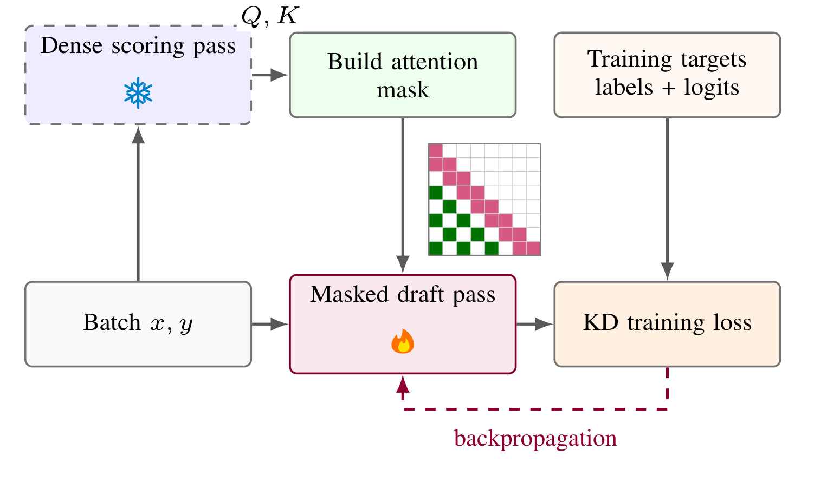
原文 Figure 7 的上方是冻结密集评分路径，下方是可训练稀疏学生路径。密集路径输出查询与键，转成注意力掩码；标签与教师 logits 则独立进入蒸馏损失。图中紫色近期区间与绿色重要位置共同构成学生可见范围，红色虚线只在学生路径回传梯度。这个结构表明它不是训练一个任意随机丢弃上下文的学生，也不是直接把教师的完整注意力复制过来，而是让将来要被压缩的草稿自己提供选择依据，再学习在该限制下跟上教师。代价是训练中额外的密集评分前向、教师预生成数据和 logits，以及适配器或完整微调成本；因此推理省下的访问量不能理解为整个生命周期没有新增计算。还需要注意冻结评分模型与可训练学生之间的关系：评分路径不参与损失回传，因此掩码构造没有作为可微选择器联合优化；它是给定当前评分规则后，为学生施加一个接近压缩推理的可见范围。图中的教师监督入口提供标签和概率分布，并不等同于密集草稿评分路径，两者作用应分别实现。训练时若误让掩码泄露未来位置，学生会看到自回归推理无法获得的信息，离线损失可能变好但实际接受长度下降。另一个实现风险是将冻结前向的中间张量连入反传图，这会增加显存与计算，也改变原定训练配方。稀疏学生路径使用同一批样本的因果上下文，必须让近期区域随查询位置变化，而不能对整条序列机械套一个包含未来键的位置集合。原文的两次前向结构因此同时规定了监督来源、可见性与梯度边界；复现不能只保留最终交叉熵与KL公式，忽略前面的掩码生成过程。
训练与推理使用同一种近期加重要性思路，但预算机制不同：训练对每个样本随机采样比例以提高鲁棒性，推理在固定 token 预算下工作。原文训练 10K 步、批量 64，使用 Nemotron V2 后训练数据及教师在温度一生成的响应和 logits，训练滑窗比例为 0.25。保留比例取 0.1、0.3、0.5、0.7、0.9，其采样概率向高保留率倾斜；蒸馏温度为二，交叉熵与 KL 权重为 0.25 和 0.75。自推测场景可以通过切换适配器来区分稀疏草稿和完整验证，但服务实现必须确保验证模型的缓存和分布保持正确。
3. 实验结果
3.1 先验证长输出中的退化，再比较预算策略
主要基准为 SPEED-Bench，包含多个生成任务，重点报告吞吐相关划分。通常设置草稿长度 11、最多 4K 输出、8K 工作缓存，并分别观察零温度和温度一。接受长度的上界与草稿长度相关；不同草稿长度之间的绝对接受长度不可直接横比。输入长度从 32K 延伸到 100K，不同模型家族、完整注意力与混合结构均有实验，但结果仍是离线基准，不是线上请求分布的自动保证。
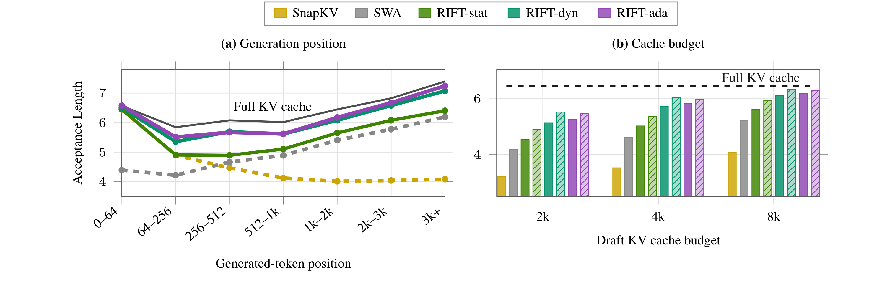
原文 Figure 1 把两个问题放到同一组展示：左侧观察生成推进时各策略的接受长度，右侧比较不同缓存预算，并以斜纹表示额外压缩感知训练。SnapKV 的早期优势不能持续，分配近期上下文与动态刷新后曲线更接近完整缓存参考。右侧预算越小越能看到压缩和训练策略的差别。这个图提供整体趋势，却不意味着压缩后每个请求都保留相同比例的性能；完整缓存虚线也是匹配草稿的参考接受长度，应与本文后来讨论的训练前或训练后基线分母区分。斜纹柱还揭示两类改进可互补：缓存策略先改变可访问位置，额外训练再改变草稿利用这些位置的能力。左图应沿相同生成区间比较各方法，而非把某条曲线后段与另一条曲线前段比较；后段任务可能更容易或更难，位置间差异包含样本存活和任务进展的影响。完整缓存接受长度也随生成位置变化，说明缓存不是全部因素。因此更可靠的读法是检查每个位置桶中压缩曲线与完整参考的差距，并配合右图固定预算比较，避免把自然生成阶段的变化误认成压缩策略的独立效应。
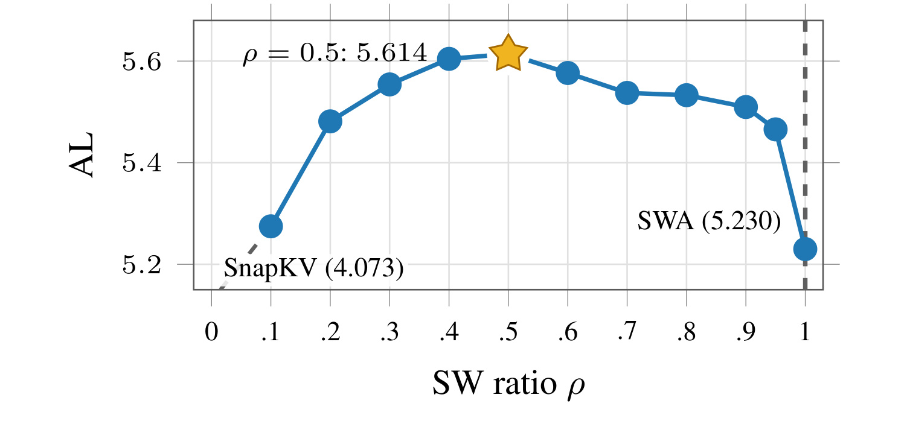
原文 Figure 3 在 32K 输入、4K 输出和 8K 预算上扫描近期窗口比例。SnapKV 为 4.073，纯滑窗为 5.230，而比例 0.5 得到 5.614，相对 SnapKV 提高约 37.8%。中间点优于两个端点，支持远程重要位置和近期内容互补的解释。不过横轴零点仍保留原有 64 token 观察窗口，并非数学意义上完全没有近期位置；比较时不能把零点当成严格的 $r=0$ 实现。该最优比例来自指定模型与任务，附录更大范围扫描才用于判断参数稳健性。曲线中从零点向中间区域提升说明，给近期上下文更多空间的收益，开始时超过减少远程提示位置带来的损失；超过中间比例以后继续增加滑窗则逐渐下滑，说明远程集合并非完全冗余。纯滑窗端点依然明显优于原始小窗口筛选，但它没达到峰值，因而结论也不是全部缓存都该用于近期内容。图上最优点只是在这组输入长度、输出上限和预算下成立；当输出较短或需要回访早期事实时，远程位置的价值可能变化，实际服务应按请求类型再做扫描。
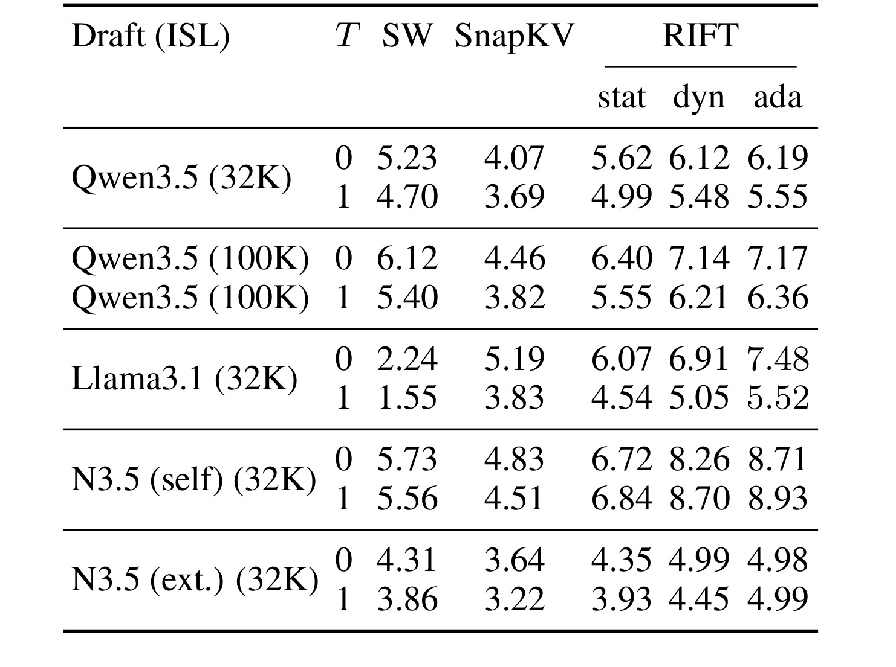
原文 Table 1 给出绝对接受长度。Qwen3.5 的 32K、零温度结果中，滑窗 5.23、SnapKV 4.07、静态 5.62、动态 6.12、自适应 6.19；100K 时静态 6.40、动态 7.14、自适应 7.17。更长输入下重评分仍然有用。Llama3.1 则是滑窗 2.24、SnapKV 5.19，自适应达到 7.48，说明本文并没有证明滑窗全面胜过重要性选择。Nemotron 的自推测与外部草稿也分别列出，不能把二者模型成本和接受长度合并成同一个部署收益。温度一通常比零温度更难匹配，这在表中多个模型行都能看到；因此必须固定采样设置讨论收益，不能把低温度结果移到高温度服务。自适应与周期之间也有例外：Nemotron外部草稿的零温度行动态为四点九九，自适应为四点九八，两者接近且未呈现一致排序。更明显的收益来自静态到动态的转换，表明重新选择历史内容是重要组成部分。各行使用不同草稿和目标，完整模型本身的匹配难度不同，接受长度更高不能说明该模型的推理系统成本更低。所有行均固定最多四千输出，比较没有改变草稿候选段长度。
3.2 刷新频率与额外开销需要一起看
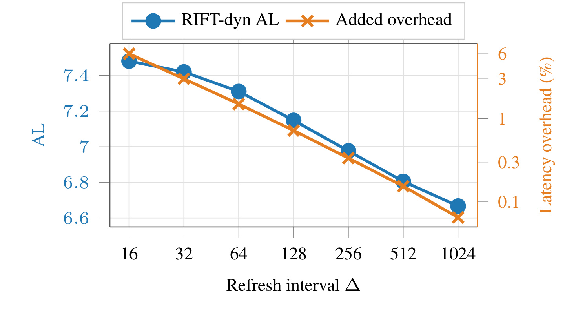
原文 Figure 4 用蓝线展示刷新间隔增大时接受长度下降，用橙线展示估计重评分开销下降。条件为 Qwen3.5-4B、100K 输入、8K 预算、4K 输出。它支持“更勤更新有更高质量也有更大成本”的权衡，却特别需要保留橙线口径：这是相对于已测草稿解码时间的重评分延迟投影，不是完整服务系统实测提速。HBM 或卸载层的历史访问、批处理行为和验证模型排队都可能改变最终拐点，不能把图中的几个百分点直接作为部署 SLA。双纵轴采用不同尺度，橙线下降幅度不能与蓝线下降幅度直接比较。横轴从很短间隔扩大到一千余步，意味着同一长回答中全历史评分次数显著减少；对应蓝线较平缓的变化提示可选择中等刷新间隔保留大部分质量。不过图中固定的是八千工作缓存预算，完整历史长度仍达到十万量级，刷新读取的候选集合远大于单步注意力集合。若改为永久驱逐方案或更慢的卸载存储，评分次数和单次费用都会改变，原图的质量与费用曲线需要重新构建。
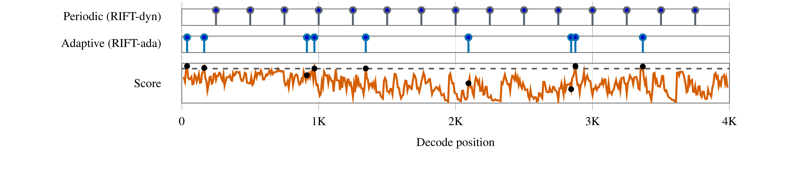
原文 Figure 5 画出一条样本上的触发时间。周期方式的标记等间隔出现，自适应方式随信号变化聚集或变稀；底部曲线对应决策得分。它解释自适应策略如何把刷新预算放到状态变化更明显的阶段，属于行为示意而非总体统计证明。单条样本更高接受长度、较少触发并不能说明所有请求都同方向改善，真正的平均权衡需要看下一张曲线及附录多配置结果。工程调试中，这种时间轴比单个均值更适合检查是否在任务转折处触发。周期标记间距固定代表它只使用时间这一触发依据；自适应标记在某些生成段密集出现，说明控制器把状态变化纳入预算安排。同一时间轴上橙色得分的局部变化与触发标记对应，适合检查阈值是否过敏或长期失活，但不能凭视觉相关性证明某次刷新一定带来收益。若要验证触发质量，应对同一段生成固定前缀后比较刷新与不刷新两种后续接受情况，并统计触发前后的平均收益，避免把任务自身难度变化误认为策略识别到了缓存陈旧性。
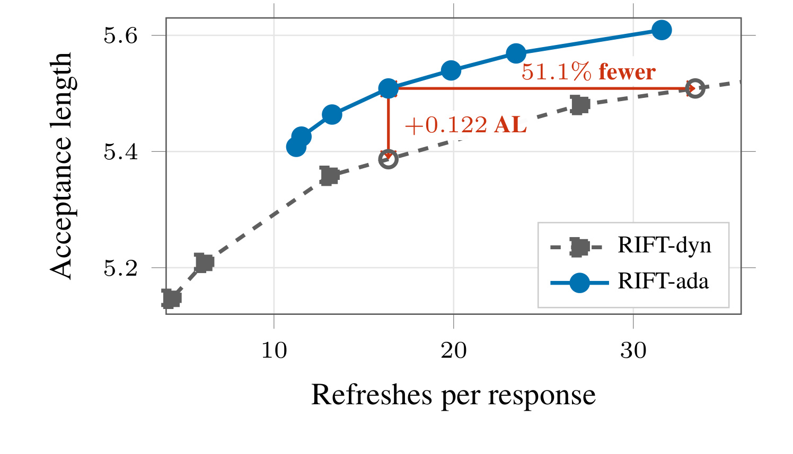
原文 Figure 6 在 32K 低熵、温度一、8K 预算下给出接受长度与每响应刷新次数的曲线。与周期策略匹配接受长度时，自适应可以减少约 51.1% 刷新，即约 2.03 倍更少；匹配次数时最高增加约 0.122 接受长度。这两个数字来自曲线上不同比较方向，不能相乘或叠加成额外吞吐率。结果说明信号可以帮助决定何时扫描历史，但尚不能推出刷新减少一半就让总解码时间减少一半，因为每轮草稿生成、目标验证及未被刷新的注意力仍然发生。曲线上每一个点对应一种刷新配置或阈值，比较应沿同一接受长度的水平线，或同一刷新次数的竖直线进行。蓝色自适应曲线在报告范围更靠左上方，代表所评估配置下的权衡更优，但该范围没有覆盖任意触发频率。刷新次数是每条响应的平均值，还受实际输出长度影响；若另一业务回答更短，固定最小年龄和最大年龄可能让策略几乎不触发，原有比例无法直接复用。真实成本核算还要把信号统计和阈值判断开销纳入分母。
3.3 对其他评分器、跨家族草稿和动态基线的检验
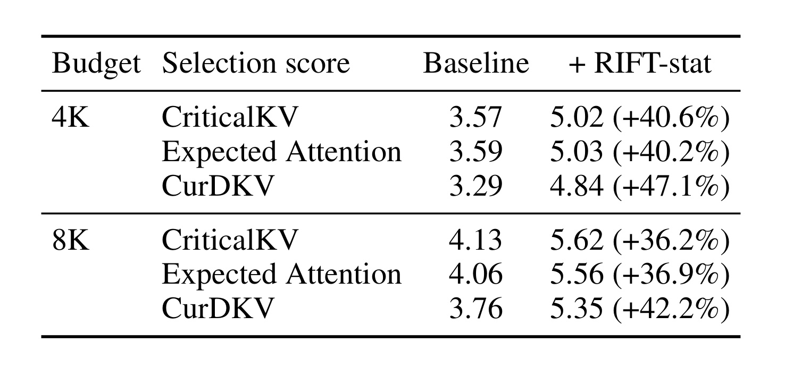
原文 Table 2 将 RIFT-stat 叠加到 CriticalKV、Expected Attention 和 CurDKV，使用 4K 与 8K 两种预算。比如 8K 下 CriticalKV 从 4.13 到 5.62，Expected Attention 从 4.06 到 5.56，CurDKV 从 3.76 到 5.35，分别约提高 36.2%、36.9%、42.2%。改进跨越三个评分器，支持问题不只来自 SnapKV 某个实现缺陷。可是比较的共同变化是把固定 64 token 近期窗口增大至预算一半，因此不能解释为新评分器学会更准确识别重要 token；这是对缓存结构分配的证据。四千预算下三种评分器也分别从三点五七、三点五九和三点二九提升到五点零二、五点零三和四点八四，说明互补性不只在较宽预算下存在。表中百分比以各评分器自己的起点为分母，因此百分比最高不等于最终接受长度最高。例如CurDKV相对改善较大，但最终仍低于另外两种评分器。这个差别对工程选型很有用：既要看从已有系统迁移的增量，也要看相同预算下的最终绝对值，还应计量各评分器原本所需的预填充工作。因此静态分配可以独立评估，不需要先实现解码刷新。预算一致是这张表具有解释力的前提。
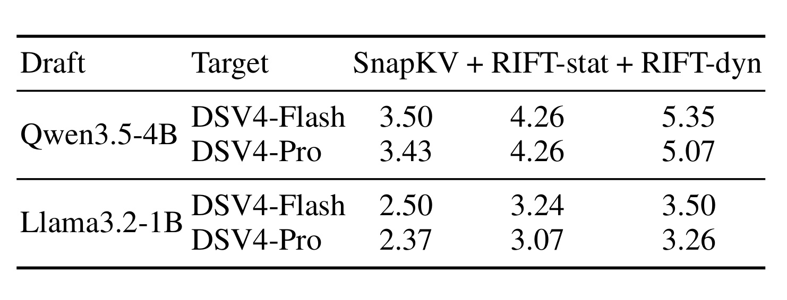
原文 Table 3 使用 Qwen3.5-4B 与 Llama3.2-1B 草稿去匹配 DeepSeek-V4-Flash 或 Pro。Qwen 对 Flash 从 SnapKV 3.50 到静态 4.26、动态 5.35，对 Pro 则从 3.43 到 4.26 和 5.07。注意这些草稿先做分词器匹配和目标蒸馏；它不是随便拿一个不同词表模型就能获得同样接受长度。附录描述了嵌入与输出头尺寸调整、同名 token 匹配和未匹配项初始化。跨家族结果支持适配后的压缩策略有效，不能省去前置模型对齐成本。较小的Llama草稿也保留相同方向：对Flash由二点五零到三点二四和三点五零，对Pro由二点三七到三点零七和三点二六。它说明动态刷新在不同容量的已适配草稿上均可受益，但不是同等增幅的保证。目标模型换成另一家族后，即使词表已完成映射，预测概率仍可能差距很大，蒸馏继续承担分布对齐作用。部署时如果更换目标版本，必须重新检查词表控制符和结束符，并重新评估接受长度，不能沿用旧目标上的缓存阈值与效果。表格报告的是已适配模型的离线接受长度，并未报告适配阶段的完整训练费用。
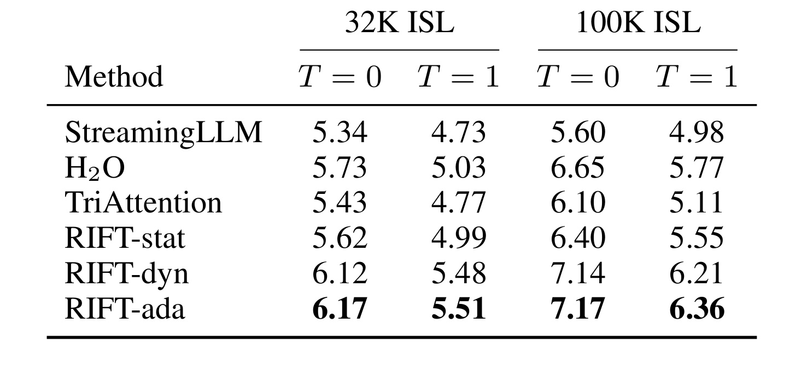
原文 Table 4 加入 StreamingLLM、H2O 与 TriAttention，避免仅击败弱静态基线。32K、零温度下 H2O 为 5.73，高于 RIFT-stat 的 5.62，而动态与自适应分别为 6.12、6.17；100K、温度一下 H2O 为 5.77，动态为 6.21，自适应为 6.36。这说明静态版本的简单性有真实质量代价，论文的强结果主要依赖刷新。表中只比较接受长度，H2O 永久驱逐与 RIFT 全历史可重访带来的存储、读带宽差别仍需另行计量，不能把绝对数值直接视为公平的系统成本排行。同表中StreamingLLM在三万二千输入的零温度为五点三四，高于原始SnapKV但低于动态刷新；它主要靠近期窗口和少量注意力汇位置，说明简单近期基线本身已经很强。H2O在多个配置优于静态RIFT，意味着历史累积分数也能缓解陈旧问题。动态版本的优势应理解为在允许重新访问完整历史前提下的质量提升，永久驱逐的基线承担不同容量约束。公平复现最好同时报告完整历史驻留位置、每轮读取字节数和接受长度，以识别收益是否来自更宽松存储条件。
3.4 训练的收益、分母以及额外数据效应
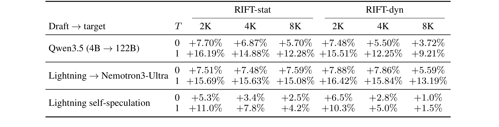
原文 Table 5 的分母是未额外训练、但使用同样压缩策略和预算的草稿。Qwen 的静态版本在 2K、温度一时提高 16.19%，动态版本 8K、零温度提高 3.72%；Lightning 外部草稿动态 2K、温度一提高 16.42%。低预算或高温度场景通常有更大改善空间。它不表示接受长度已经超过完整缓存，也不表示生成质量涨同样比例。特别是同一额外训练可能也提高完整缓存接受长度，因此“恢复到完整缓存的百分之几”必须明确用原始模型还是训练后的模型作为分母。表中自推测行的训练增益相对更小，尤其八千预算、零温度下动态只增加约百分之一，符合基线已接近完整缓存时剩余空间有限的解释。温度一在多数列有更大相对收益，但其起始接受长度也更低，因此不能只看百分比决定业务价值。两个方法的相对增益还不能互相相加：静态与动态是替代的推理政策，各自有自己的未训练基线。读表时应先固定模型对、温度、预算和政策，再应用对应百分比回算绝对接受长度，避免跨列组合出原文不存在的结果。
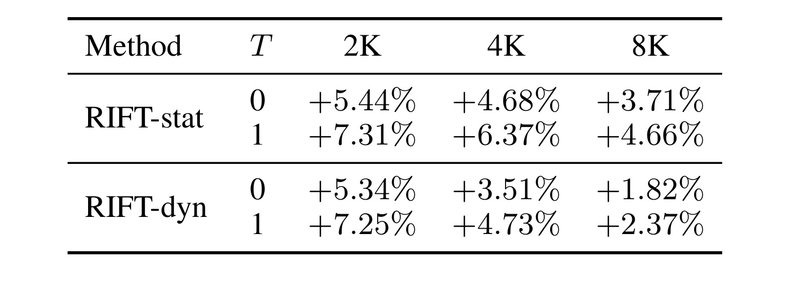
原文 Table 6 控制了训练配方和数据，把额外收益定位到压缩驱动掩码。静态版本 2K、零温度还提高 5.44%，动态版本 8K、温度一提高 2.37%；其余配置也为正。由于对照已经做同样数据上的后训练，这比只和原始模型比较更能说明掩码的作用。与此同时，增益小于 Table 5，表明总改进中有一部分来自普通蒸馏和训练数据，不能全部归给可压缩性。附录注意力掩码对随机掩码、固定滑窗的比较进一步约束了“任意稀疏训练都一样有效”的解释。该对照尤其限制了对训练收益来源的归因。如果只拿最终检查点与原始检查点比较，无法知道改善来自教师数据、常规蒸馏还是受限上下文适应。此表先控制前两项，再显示掩码仍提供正增益，因此支持可压缩性适应有独立贡献。八千预算下的增益小于两千预算，说明在更完整的上下文里普通蒸馏已能覆盖较多能力。若希望减少额外密集评分成本，可先衡量自身预算下这部分增益是否足够大，再决定是否需要完整压缩感知训练，而不是默认所有模型都值得付出相同训练代价。
摘要强调 32K 输入、4K 输出与 8K 预算时保留超过 98% 的完整缓存接受长度。这是特定草稿—目标组合、压缩策略与训练的结果，不是所有表格的共同下限。附录对 Nemotron 还明确给出：训练后动态 8K 的 5.27 相对原草稿完整缓存 5.39 是 97.8%，但相对训练后完整缓存 5.75 只有 91.7%。同样的分子换一个合理分母就产生明显不同的“保留率”，因此复现时应同时报绝对接受长度和匹配检查点的完整缓存基线。
附录也给出限制普遍化的证据。100K 扩展里部分增益很小，RIFT-ada 在 8K、零温度出现约负 0.34% 的训练变化，说明训练并非任何预算下一律改善。LoRA 与完整微调比较的均值非常接近且置信区间重叠，不能依据正文“略高”的叙述宣称完整微调显著更优。任务分解还包含重复出现的创意写作名称，阅读时应按原表保留而不自行发明新任务标签。更稳妥的结论是：主文支持动态刷新和压缩感知训练有效，外推到任意模型、任务、预算与真实时间收益仍有条件。
附录的训练控制还有一项实际意义：作者分别扫描了随机掩码、固定大小滑窗掩码与注意力掩码，注意力掩码在报告的温度和预算组合中领先。这支持训练时的可见位置应尽量接近推理选择，而不是只靠一般的上下文丢弃正则化。与此同时，保留比例分布的软、标准和更强高值偏置之间差别较小，训练滑窗比例变化也没有出现巨幅波动，因此不能把一组超参数的小数点差异过度解释为新的主要机制。对复现者来说，应先确认评分和因果掩码正确，再花资源调采样分布。
还要区分跨任务稳定性与完全没有失败情况。附录按排序、针检索、代码调试和领域问答拆解接受长度，多个类别保留整体排序趋势，但这些任务中的接受长度仍是草稿对目标的匹配指标，不是各任务最终答案正确率。压缩只施加在草稿端，最终质量依赖目标验证正确性；如果实现中错误复用了草稿稀疏缓存去验证，本文的分布保持论证就不再适用。因此系统测试应同时覆盖接受率和逐输出分布一致性。
4. 总结
RIFT 最有价值的观察是，草稿工作缓存的效用随着生成推进发生变化。固定提示筛选、近期预算和动态刷新处在同一个质量与访问成本的权衡空间中，训练又能让草稿适应这个受限视野。静态分配适合希望以较小实现变化拿到收益的情况，动态刷新需要可重访历史，自适应控制则进一步依赖稳定信号与阈值。读者应按这些层次分别评估，而不是把整套方法压缩成“缓存缩小四倍且性能不变”。
局限首先是接受长度与端到端性能之间仍有距离：本文充分展示了前者，刷新成本有投影口径，尚不能代替目标硬件与真实并发下的延迟测量。其次，动态版本保留完整历史供重评分，工作集预算与系统总容量不同，尤其卸载方案的互联带宽可能成为新瓶颈。第三，架构影响很强，混合注意力与完整注意力对远程信息和近期信息的依赖不同；比例和阈值迁移都需要新校准。第四，额外蒸馏包含密集评分前向和教师 logits，训练成本、数据可得性与分布偏差都可能限制复现。第五，主文的超过 98% 是具体条件下的接受长度保留率，分母若不匹配检查点会高估相对恢复程度。
面向推荐系统，更值得尝试的不是把该方法直接用于 CTR 模型，而是在长历史对话推荐、商品解释生成或多轮检索助手里度量缓存陈旧性。可以先画生成位置分桶的草稿接受长度，再统计原始提示位置和已确认响应前缀的注意力覆盖，判断是否存在本文描述的失配。只有确实发现长期输出导致静态选择退化，才有必要考虑刷新；短输出占主导的业务可能根本没有足够摊销空间。对个性化记忆还需区分用户长期偏好与当前任务状态，不能因为近期上下文重要就把长期偏好永久驱逐。
后续复现有三个优先方向。第一，在固定草稿、固定采样温度、固定验证实现下同时报告静态、周期与自适应的绝对接受长度、完整缓存基线和真实每 token 时间，确保指标对应同一输出分布。第二，分别测量工作集、完整历史和卸载传输的容量与带宽，让“压缩”口径可检查，并扫描页大小、比例和刷新间隔。第三，对同样教师数据做密集蒸馏、随机稀疏、注意力稀疏三种对照，同时保留训练前后完整缓存结果，以区分数据、压缩适应和分母变化。若这三项证据完整，才适合把离线质量趋势推进到真实服务试验。
进一步跟进时，还应将请求按输入长度、实际输出长度、温度和任务切换频率分桶。平均数可能被大量短回答稀释，而真正需要缓存刷新的长回答只占小部分；分桶结果能帮助判断是否按请求动态启用刷新。策略校准必须使用独立样本，并在模型版本改变后重新确认接受信号和查询漂移阈值。对于用户记忆场景，还应把强制保留的系统约束与用户事实和普通高分位置区分开，防止注意力打分遗漏低频却不可丢失的指令；这属于部署层需要增加的保护，原文没有提供相应线上验证。
开放代码的核验也是后续条件。本轮只确认论文原文，尚未确认独立官方实现。复现前应检查作者是否公开评分内核、选择索引、分词器适配与训练掩码构造，而不只检查是否有一个同名仓库。若只能依据文字重建，应把实现差异与论文结果分开记录，避免把自制近似版本的失败或成功直接归因于原方法。